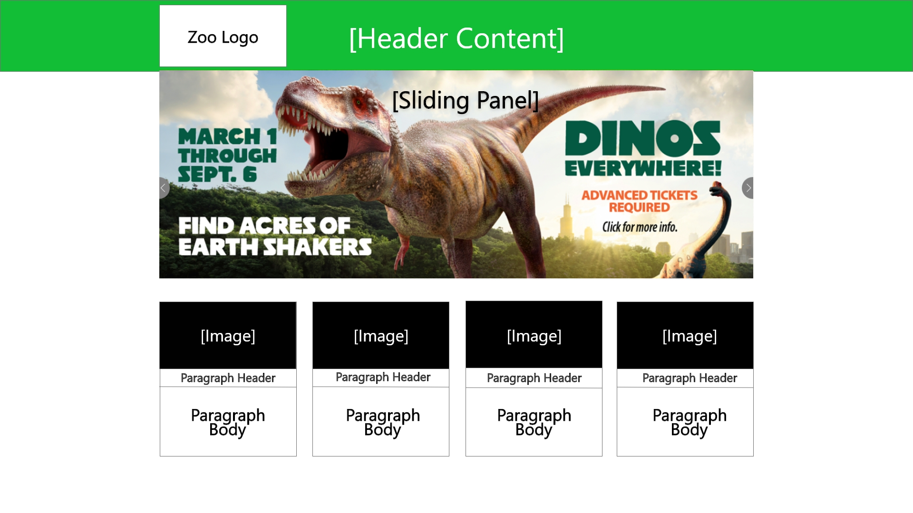
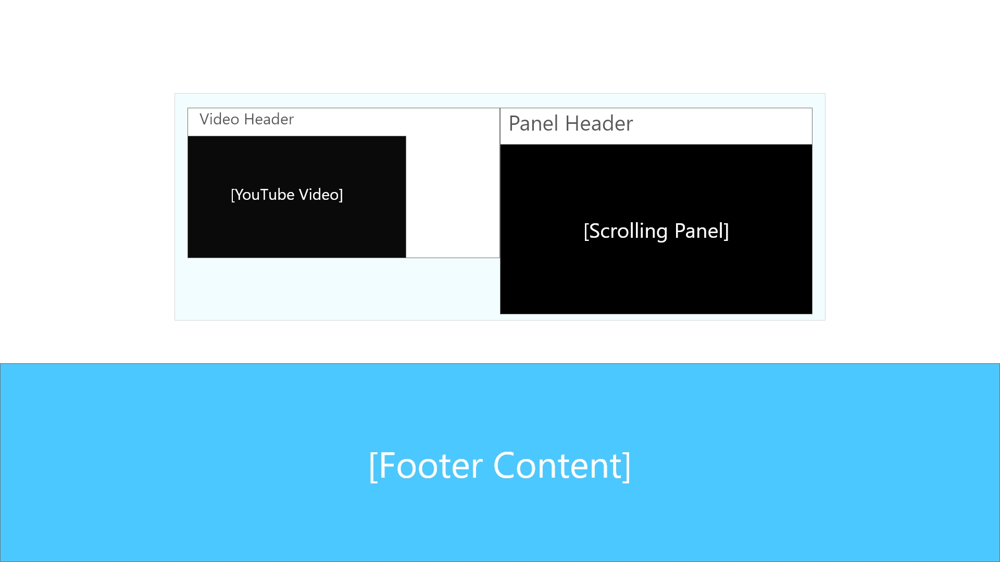

Brookfield Zoo Page 1:

Brookfield Zoo Page 2:

How to make the site easier to load:
- The first thing I would do is change the front sliding panel so that it only has 3 pictures. I'd do this so that the site doesnt have to load as much, making the page size smaller.
- There are a lot of URL redirects in this website. Removing some of the would create a lot less delay when navigating the site.
How to make the site easier to use:
- Changing the Sliding panel from 6 to 3 panels would make it easier to find specific panels that the user wants to find.
- Instead of showing a paragraph of information for each topic on the main page, I would create buttons so that you can see many articles based on the topic you want. (News, Membership, Events, and Animal Adoption)